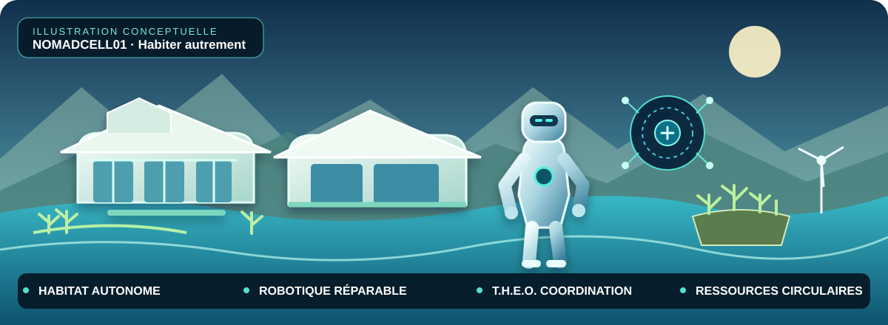
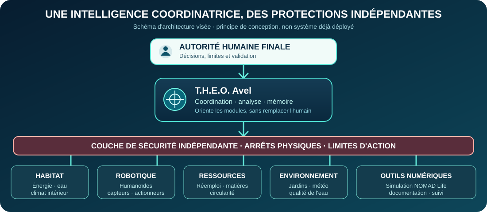

Un particulier
Laurent Tcheng est à l'origine de la vision de NOMADCELL01. Il fixe les objectifs, choisit les orientations et conserve l'autorité finale sur les décisions.
TRANSPARENCE · RECHERCHE · ÉVOLUTION
Un projet en construction, plusieurs chantiers menés en parallèle et une volonté : documenter le chemin parcouru aussi honnêtement que l'ambition finale.
État de référence préparé le 12 octobre 2026 · Cette page sera actualisée lorsque de nouvelles informations auront été vérifiées.
Suivre le journal de bord Retour au site principal
01 · QUI PORTE LE PROJET ?
Laurent Tcheng est à l'origine de la vision de NOMADCELL01. Il fixe les objectifs, choisit les orientations et conserve l'autorité finale sur les décisions.
Une intelligence artificielle qui accompagne les recherches, l'organisation des connaissances, la réflexion, la rédaction et la préparation des étapes de conception. L'IA n'est pas une personne physique ni une entité juridique indépendante.
02 · LES CONDITIONS DE TRAVAIL
Tout ce travail est réalisé depuis un téléphone portable, sans utilisation de PC ni de tablette, avec des moyens financiers extrêmement limités.
Cette contrainte fait partie intégrante de l'histoire du projet. Elle influe sur les outils accessibles, les possibilités de test et la vitesse de développement. Nous privilégions les ressources gratuites et n'engageons aucune dépense ni aucun abonnement sans décision explicite.
Laurent Tcheng mène ce projet avec des moyens financiers extrêmement limités. Ses droits au chômage sont arrivés à leur terme et il ne bénéficie pas du RSA. En parallèle du développement de NOMADCELL01, il apporte son aide au restaurant familial ; le temps consacré au projet dépend donc de ses disponibilités et de ses obligations quotidiennes.
Cette situation est présentée aux futurs partenaires et investisseurs afin qu'ils puissent évaluer le projet dans son contexte réel : ses ambitions, les travaux déjà accomplis, ses limites actuelles et ses besoins pour franchir les prochaines étapes. Notre engagement est de distinguer les objectifs des réalisations et de ne dissimuler ni les difficultés ni les besoins de financement.
03 · PLUSIEURS CHANTIERS EN PARALLÈLE
Ces axes avancent en parallèle et sont reliés entre eux. Leur présence sur cette page décrit le périmètre du projet, pas la prétention que tout est déjà construit.
Cellules modulaires, habitat durable, énergie, eau, assainissement, jardins, serres et gestion des ressources.
Modularité, réparabilité, capteurs, actionneurs, sécurité, prototypes et possibilités de fabrication.
Assistant sur téléphone, mémoire de projet, coordination, commandes utiles et principes de sécurité. Les fonctions sont suivies selon leur état réel.
Simulation de vie et d'habitat en 3D pour explorer les environnements, les usages et les idées de conception.
Objectif visé : un terrain de 2 000 à 3 000 m² pour construire, tester et améliorer habitats, robotique et systèmes autonomes.
Prévoir les matériaux avant fabrication, réduire les chutes, réemployer les pièces et recycler ce qui ne peut plus être réutilisé.
Développement progressif d'un écosystème de vie, avec une priorité actuelle donnée aux pistes terrestres et côtières avant les phases marines.
Étudier à terme des solutions utiles au quotidien, y compris la mise à disposition solidaire d'humanoïdes pour des personnes isolées, sous réserve de faisabilité et de moyens.

04 · NOS RÈGLES DE TRANSPARENCE
La transparence n'implique pas la publication de données personnelles, de mots de passe ou de détails de sécurité et de conception qui doivent rester confidentiels.
05 · JOURNAL DE BORD
12 octobre 2026 · Entrée de référence
Travail documenté : structuration d'un suivi transparent des chantiers, rappel de la situation actuelle du projet et préparation de la recherche d'un partenaire pour le centre expérimental de Barcelone.
Décision : le site doit présenter toutes les composantes du projet, les recherches complémentaires, les statuts réels et les besoins, tout en précisant que le travail est mené depuis un téléphone, sans PC ni tablette et avec des moyens financiers très limités.
État : page de suivi préparatoire. Cette entrée ne prétend pas qu'un terrain, un financement ou des prototypes matériels sont déjà disponibles.
12 octobre 2026 · Transparence sur la situation financière
Information communiquée et validée par le porteur de projet : ses droits au chômage sont arrivés à leur terme et il ne bénéficie pas du RSA.
Contexte : NOMADCELL01 est actuellement développé avec des moyens financiers extrêmement limités, depuis un téléphone portable, en parallèle de l'aide apportée au restaurant familial.
Pourquoi le préciser : permettre aux futurs partenaires et investisseurs d'apprécier honnêtement les conditions de travail, les limites actuelles et les besoins de financement du projet. Cette information ne signifie pas qu'un financement est déjà obtenu.
Les prochaines entrées seront ajoutées au fil des recherches et des avancées vérifiées. La date indiquée correspond à la dernière mise à jour publiée, pas à une actualisation automatique en direct.
06 · CENTRE EXPÉRIMENTAL
Le projet vise un terrain de 2 000 à 3 000 m² pour un centre réel d'apprentissage et d'expérimentation : habitats modulaires, construction, robotique, humanoïdes, T.H.E.O., énergie, eau, matériaux et essais écologiques.
Nous recherchons un partenaire susceptible d'apporter le terrain, le financement intégral de la première phase et des moyens techniques. Il s'agit d'un besoin recherché, pas d'un financement déjà obtenu.
Écosystème industriel et technologique, piste pour les mises en relation.
Site officiel →Centre technologique, piste de collaboration et d'accompagnement.
Site officiel →Recherche en robotique et informatique industrielle.
Site officiel →Ces trois structures sont des pistes de contact. Aucun partenariat n'est confirmé et aucun courrier n'est déclaré envoyé à ce stade.
07 · CONTACT
Site principal : NOMADCELL01
Courriel : nomadcell01@gmail.com
Devise du projet : « La technologie au service du quotidien et du vivant. »
Retour au site principal